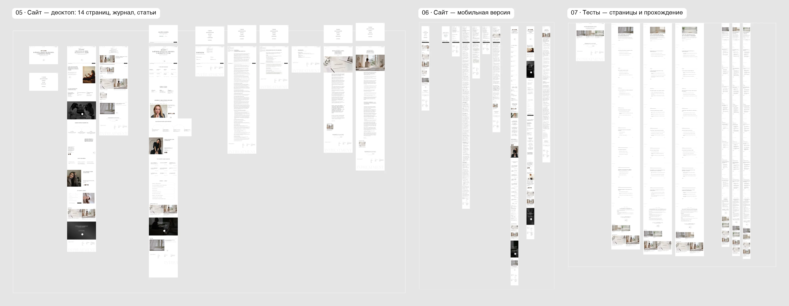

Платформа подбора психологов
С весны работаю с двумя основательницами над платформой подбора психологов. Работала в связке с продуктовым лидом и разработчиками: вели продуктовый процесс — исследование клиентского флоу, гипотезы и тесты.
До меня подбор шёл через Telegram-бота: он задавал вопросы и по дереву запросов приводил человека к психологу. Сайт был визиткой, и записаться через него было сложно.
95% людей заходят с телефона, часто вечером, когда им тяжело. Листать каталог из сотни анкет в таком состоянии никто не будет. Поэтому подбор мы строили как разговор.
- КомандаПродуктовый лид, разработчики, основательницы; я на продукте и дизайне
- ПроцессИсследование клиентского флоу → гипотезы → прототип → тесты → правки по данным
- МетрикиВоронка подбора по шагам: от согласия до записи и оплаты первой сессии


Три продукта
Я делала всё, через что проходит человек: от первого захода на сайт до кабинета после записи.
- СайтГлавная, страница для психологов, журнал, тесты, подбор и юридические страницы
- Чат-подборПо сути онбординг: человек находит психолога в разговоре
- Личный кабинетСама платформа: кабинеты клиента, психолога и администратора
Отдельная задача была со стилем. Он должен был нравиться основательницам и цеплять их будущих клиентов.


С первого раза стиль не зашёл
Сначала отталкивалась от старого брендинга: собрала мудборды, референсы, новый вижн бренда. Дизайн заказчицам не понравился.
Я собрала новый бриф и уточнила, что именно не нравится. Стало понятно, что основательницы хотят журнальный и лаконичный стиль под их собственный шрифт. Подобрала новые референсы.
На свежем взгляде за день собрала быстрый прототип сайта — живой, а не картинку в Figma. Когда заказчицы смогли сразу посмотреть сайт в браузере, стало понятно, что это оно. С тех пор показываю решения прототипом: макеты неудобно презентовать заказчикам.
- Попытка 1Мудборды и новый вижн по старому брендингу. Не понравилось
- Новый брифЧто не нравится, журнальный стиль, их шрифт, новые референсы
- Попытка 2Живой прототип сайта за день вместо макета. Утвердили
Самым сложным было понять, чего человек хочет, когда он сам не может это сформулировать.
подбор


Путь клиента в Miro
Перед кабинетом разложили в Miro весь путь клиента: воронку сайта, воронку бота и схему, где отвечает ИИ, а живой дежурный проверяет. Красным отмечены места, где клиенты уходят: регистрация, оплата, покупка пакета.
По этим схемам потом сверяли всё, что рисовали в Figma и собирали в прототипе.


Многостраничный сайт: блог, статьи, тесты
После утверждённой главной все страницы собирались в той же системе. Главная ведёт в подбор, страница для психологов собирает заявки в команду, журнал пишут сами психологи, а тесты помогают человеку понять свой запрос и тоже приводят в подбор.
- Подбор и входГлавная с кнопкой подбора, «Давайте начнём», вход в кабинет
- Тесты8 вопросов, результат по преобладающему ответу и своя кнопка в подбор
- ЖурналСтатьи психологов, рубрики, популярное, подписка
- Для психологовЦенности, как подбираем клиентов, анкета в команду
Мобильную версию проверяли по скринам команды: карточки статей кликаются целиком, нижняя панель прячется при открытом меню, кнопки одной ширины.

Сначала для заказчиц, потом по данным
Сайт и чат собраны как рабочие прототипы. Разработчик получил готовый фронт и подключил данные, верстать с нуля не пришлось. На этом же фронте удобно собирать варианты для A/B-тестов.
Уже пришли первые результаты аналитики. Видно, как пользователи ходят по сайту и что можно убрать и упростить.
Первый прототип уже немного переделан. Я считаю, это нормальная работа дизайнера: сначала докрутить до того, чтобы нравилось заказчицам, а потом по данным подбирать решения для пользователей.